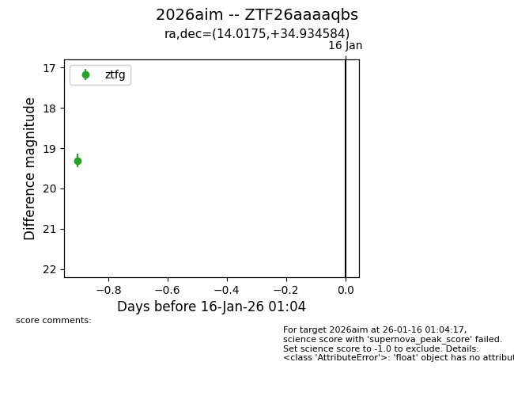
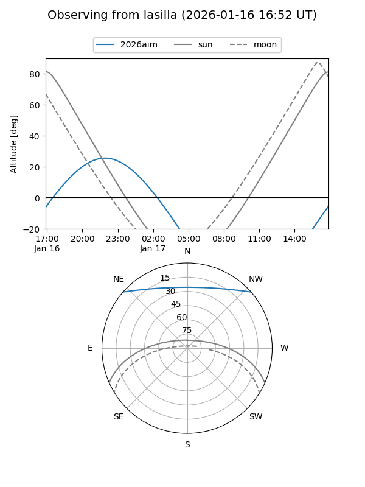
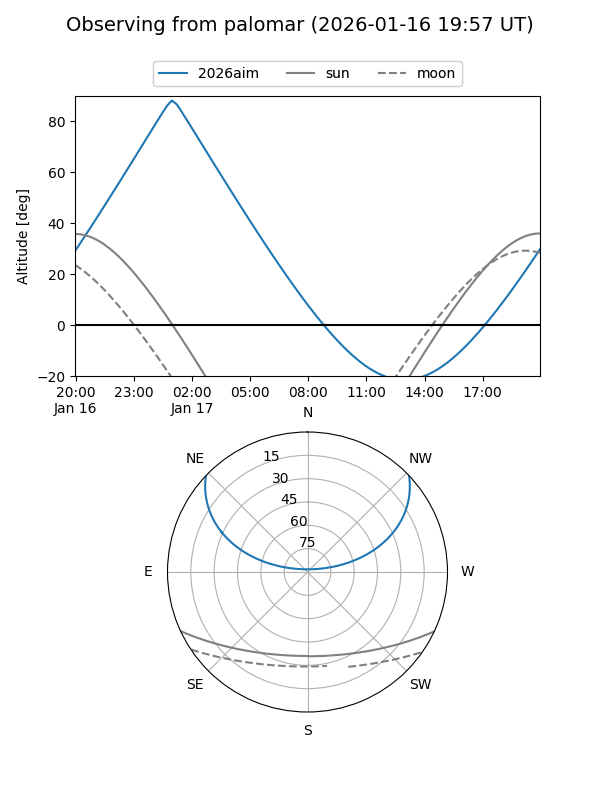
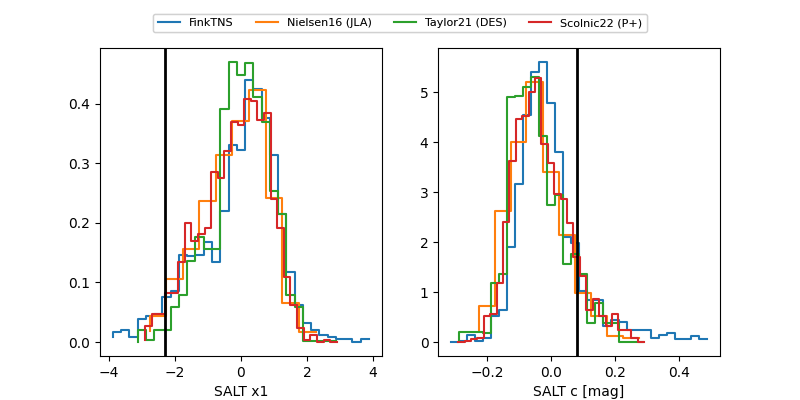

2026aim
Target 2026aim at 2026-01-16 01:05
Aliases and brokers:
FINK: link
Lasair: link
ALeRCE: link
TNS: link
YSE: link
alt names
ZTF26aaaaqbs (ztf,fink_ztf)
2026aim (tns,yse)
Coordinates:
equatorial (ra, dec) = 14.0175,+34.93458
equatorial (HMS+DMS) = 00:56:04.19,+34:56:04.50
galactic (l, b) = (124.0064,-27.92750)
Flags:
Photometry:
last ztfg=19.31
1 ztfg detections
Lightcurve

Visibility


Additional plots
